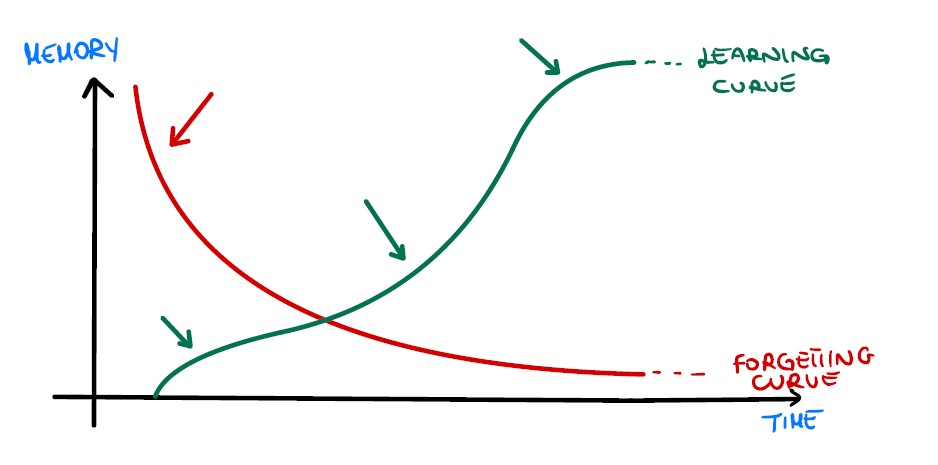
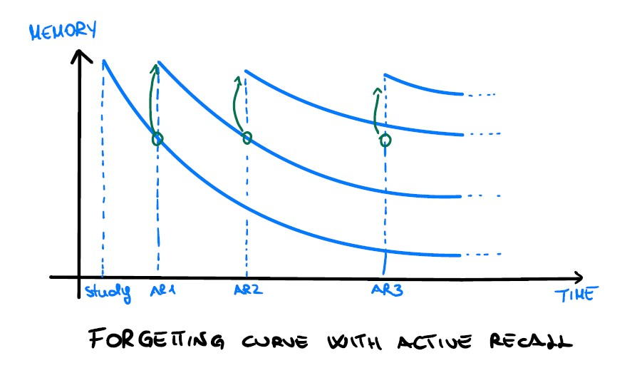

Spaced Repetition
Have you ever heard about spaced repetition? Well, if you struggle about remembering theoretical concepts,
probably not. Several studies have demonstrated the effectiveness of this technique. Hermann Ebbinghaus, a
German psychologist and philosopher, was one of the first interested about the memory and its "mechanism".
He claimed that a number of repetitions deferred in a long time it's definitely more effective than a huge
effort in a single time. In particular he recorded himself while he was trying to remember some syllabus.
In short, he pointed out two fundamental concepts: the forgetting curve and the learning curve.
The first one describes how we normally forget what we learn and it can be clearly seen that we mostly
forget immediately after. Then, the second one shows how fast we can actually learn and it cannot be
generalized because it depends on several factors, but one representation that unites different theories
is described by the sigmoid function, where there is an initial “little” improvement, then it strongly
increase (when we actually feel a bit more confident in the new topic) until it reaches its local maximum
and it starts again with little improvements.

Now let's get back to us.. How can we optimize our study routine? Here comes the spaced repetition, in fact, we can try to obstruct the forgetting curve by recalling that specific topic over time.

By introducing some active recalls in our study routine we can reduce the slope of our forgetting curve.
It doesn't necessarily require the same effort that we put on our first study but we have to
bring that topic to our mind and it should not take so long. There are several techniques that could help
such as flashcards, conceptual maps, Q&A and so on. We can deepen them next time in another article.
Fair questions : how many active recalls do I need to do? How often do I need to do these active recalls?
Well, here comes the debate. If you look at different articles, papers and studies you can
find some contrasting pattern. I think that probably this kind of pattern should also
match our attitude to study and to learn. I can just say that the "magic" number doesn't fit everyone
on earth, but it has been demonstrated that (around) four active recalls could improve your memory.
In order to answer the second question the approximate pattern should be around 1 day, 1 week, 2 weeks
and finally 1 month. Of course it is quite flexible, it is not necessary to wait until the exact day
but there is also a reasonable "gap" among these turns.
It is an extremely interesting topic, but unfortunately I am not an expert about it, so if you are
curious, you can find several other pieces of information down below.
See you next time! :D
Francesco
Bibliography
-
The right time to learn: mechanisms and optimization of spaced learning.
Paul Smolen, Yili Zhang, and John H. Byrne
-
Contribution to Experimental Psychology
Hermann Ebbinghaus (1885)
-
Hermann Ebbinghaus
Wikipedia